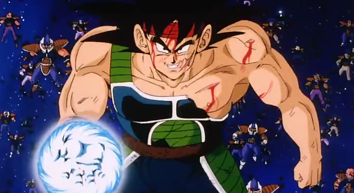
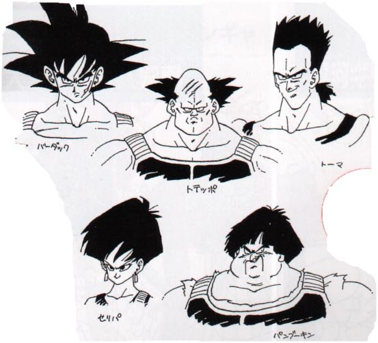

- 이것으로 모든 것이 변한다.
- 이 혹성 베지터의 운명.
- 이 나의 운명.
- ...카카로트의 운명, 그리고 네놈의 운명도!
- 초기 설정은 원래 "오공의 아버지를 적으로 만들어 볼 순 없을까?"라는 생각에서 만들어져서 오공 일행의 적으로서 등장하여 부자 대결을 펼치도록 예정이 되어있었다고 한다.
- 초기 디자인은 애니메이터 중 한 명인 나카츠루 카츠요시가 만들었는데, 이 때의 버독의 얼굴은 현재의 디자인보다 더 오공과 가까운 디자인이며 머리 모양은 오공과 베지터의 머리 모양을 반반 섞어넣어 놓은 듯한 느낌이었다.전투복도 고간 가리개가 있고 바지가 팬츠 타입인 것 외에는 동일한 형태.
- 버독 이외에도 버독의 동료들의 디자인을 살펴볼 수 있는데, 3류 악당스러운 디자인이라 버독은 지금의 토리야마 디자인과 나카츠루 디자인 둘 다 각자의 매력이 있지만 동료들의 디자인은 현재가 훨씬 낫다는 의견이 대다수. 나카츠루의 버독팀 디자인은 야쿠자 집단 같다는 평이 있다.
- 원작자 토리야마가 초기 디자인을 다시 수정한 현재 디자인. 왼쪽 위부터 시계 방향으로 버독, 토테포, 토마, 팜프킨, 세리파.

